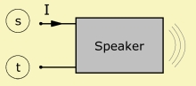

Speaker
| Home | LE-Part | Electro-acoustic |
 |
Speaker specifies the compact model of an electro-dynamic loudspeaker mounted in a sealed enclosure. It is driven by two-poles of the electrical domain.
Parameters
| Caption | String | Name of component |
| Formula | String | Formula of parameters |
| Mms | kg | Mass of vibrating assembly |
| Kms | N/m | Total stiffness of suspensions |
| Rms | Ns/m | Mechanic resistance |
| fs | Hz | Fundamental Resonance |
| Qms | Mechanical Quality Factor | |
| Creep | Factor of creep-formula | |
| Re | Ω | Voice coil resistance at DC. |
| BL | N/A | Force Factor of motor. |
| Qes | Electrical Quality Factor. | |
| VC | HF voice coil parameters. | |
| Vb | m3 | Volume |
| eta | Damping factor η | |
| mb | Load factor | |
| Diaph | Ref or value | Diaphragm size |
| Ref to P-Source | Link to BEM pressure sources | Only if Diaph=Value |
 |
Vb and eta
The enclosure is modeled with the help of an acoustic compliance and resistance which is internally wired to the rear of the diaphragm. The compliance Cab = Vb/(ρc2) is deduced from the enclosure volume Vb. The resistance Rab = ρ·c/(η·Vb) from loss-parameter η. with air-density ρ, speed of sound c.
mb
mb is a factor which lowers the resonance frequency fs. This mimics the fact that there would be a little mass-load due to the enclosure.
Diaph
The front of the diaphragm radiates and gets automatically assigned a radiation
impedance. There are two modes of modeling supported here.
(1) Coupled to BEM-Part: In this mode
there is a vibrating boundary from which Speaker receives information about the size
of the diaphragm and the radiation impedance. Select a reference.
(2) Lumped Elements only: In this mode there is no vibrating boundary. The size
of the diaphragm is specified by value. The radiation impedance is calculated
approximately by the text-book formula of a disc in an infinite baffle.
Optionally radiation can be observed if a link to a pressure source is provided.
See also
LE Diaphragm Derivation, LE Electro-Dyn-Model, LE Electro-Dyn-Qts, Enclosure
Formula
The name of the parameters are equal to the formula-identifiers:
|
| ||||||||||||||||
| |||||||||||||||||